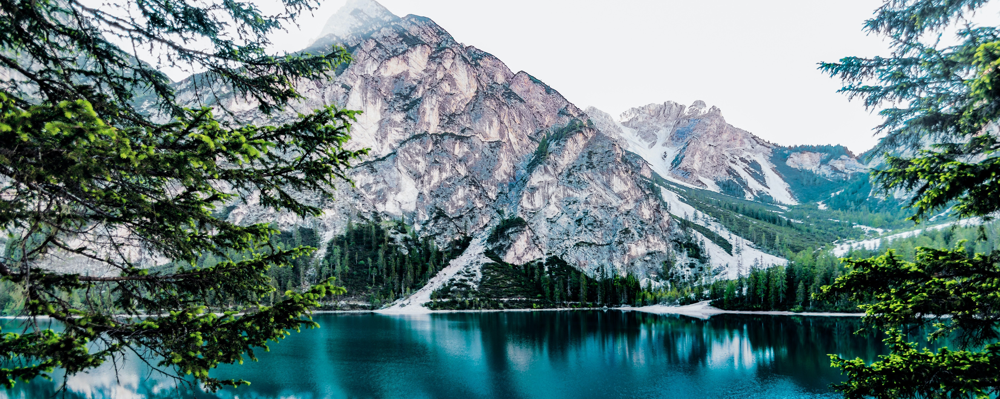

Protected areas or conservation areas are locations which receive protection because of their recognized natural, ecological or cultural values. There are several kinds of protected areas, which vary by level of protection depending on the enabling laws of each country or the regulations of the international organizations involved. Generally speaking though, protected areas are understood to be those in which human presence or at least the exploitation of natural resources (e.g. firewood, non-timber forest products, water, ...) is limited. The term "protected area" also includes marine protected areas, the boundaries of which will include some area of ocean, and transboundary protected areas that overlap multiple countries which remove the borders inside the area for conservation and economic purposes. There are over 161,000 protected areas in the world (as of October 2010) with more added daily, representing between 10 and 15 percent of the world's land surface area. As of 2016, there are 14,688 Marine Protected Areas (MPAs), and approximately 14.7% of the world's terrestrial and inland water areas (excluding Antarctica) are protected. For waters under national jurisdiction beyond inland waters, approximately 10.2% of coastal and marine areas and 4.12% of global ocean areas are covered by marine protected areas.In contrast, only 0.25% of the world's oceans beyond national jurisdiction are covered by MPAs. Through the EU Biodiversity Strategy for 2030, the European Union targets to protect 30% of the sea territory and 30% of the land territory by 2030. Also, Campaign for Nature's 30x30 for Nature Petition tries to let governments agree to the same goal during the Convention on Biodiversity COP15 Summit. has the same target. Protected areas are essential for biodiversity conservation, often providing habitat and protection from hunting for threatened and endangered species. Protection helps maintain ecological processes that cannot survive in most intensely managed landscapes and seascapes.
Through its World Commission on Protected Areas (WCPA), the IUCN has developed six Protected Area Management Categories that define protected areas according to their management objectives, which are internationally recognised by various national governments and the United Nations. The categories provide international standards for defining protected areas and encourage conservation planning according to their management aims.

Australia
Main article: Protected areas of Australia
The National Heritage List is a heritage register,a list of national heritage places deemed to be of outstanding heritage significance to Australia, established in 2003. The list includes natural and historic places, including those of cultural significance to Indigenous Australians.[42] Indigenous Protected Areas (IPAs) are formed by agreement with Indigenous Australians, and declared by Indigenous Australians, and form a specific class of protected area.